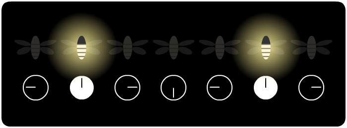

“Vagalumes”
traduzido por Lucas Costa | original em inglêsTal qual as luzes de natal flutuando gentilmente no ar, os vagalumes sempre adicionam um pouco de mágica às florestas onde vivem.

Mas algumas espécies de vagalumes adicionam ainda mais mágica. No Sudeste Asiático, se você andar pelas margens de um rio à noite, você será surpreendido por este impressionante show de luzes - cortesia dos vagalumes tailandeses.
Uma floresta inteira, brilhando toda de uma vez, e mergulhando na escuridão, e então brilhando de uma vez novamente - numa sincronia quase perfeita. Como milhares de vagalumes se coordenam? Quem é o maestro dessa silenciosa sinfonia?
Isso foi um mistério por quase um século e, em 1992, um time de cientistas norte-americanos tentaram resolvê-lo. Infelizmente, mas não surpreendentemente, a imprensa zombou deles - “O governo direciona o dinheiro do seu imposto para estudar vagalumes em Bornéu: uma ideia nada brilhante!” dizia um tablóide. Mesmo pressionados, os cientistas pegaram sua câmeras e calculadoras e seguiram adiante.
Então como milhares de vagalumes escolhem um líder para seguir, um maestro para manter seus brilhos sincronizados? A resposta que os cientistas encontraram é simples:
Eles não escolhem.
Cada vagalume tem seu próprio relógio interno, e cada vez que o relógio bate “12 horas”, o vagalume pisca.

E ao invés de sincronizarem seus relógios a um líder central, cada vagalume faz o seguinte:
Passo 1: ao ver um vagalume piscando, ajuste o relógio um pouco para frente.

Passo 2: é isso.
Mas é mesmo possível uma pequena interação como essa realmente fazer uma floresta inteira cheia de vagalumes piscar em sincronia? Só há uma maneira de descobrir...
Espere. Observe cuidadosamente.
O que você vê?
Num primeiro momento, não muito. Parece que os vagalumes continuam piscando sem um padrão.
Mas após algum tempo, você deverá notar pequenos “grupos” de vagalumes piscando juntos - mas esses grupos ainda estão fora de sincronia entre si.
Depois de mais algum tempo, você começa a ver os vagalumes fazendo uma “onda”, assim como uma torcida animada na arquibancada de um jogo de futebol.
Por fim, praticamente todos os vagalumes estarão piscando juntos - e, eventualmente, mesmo aqueles “desagarrados” entram na dança coletiva.
O que é mais impressionante? Se você interromper esses vagalumes causando um caos...
...sim, isso irá fazer os vagalumes se dividirem por um momento, mas lentamente eles irão se sincronizar novamente, e irão piscar juntos.
Aqui estão mais alguns botões para você brincar com esses vagalumes virtuais:
E aqui está o segredo por trás desse truque de mágica dos vagalumes:

Vagalumes não são as únicas coisas que se sincronizam mutuamente. Seus neurônios criam ondas cerebrais. As células do seu coração trabalham em sincronia. Mesmo um punhado de metrônomos começam a trabalhar juntos. Além disso tudo, o entendimento desse tipo de sincronia nos ajudam a entender melhor os lasers, computadores e as tecnologias de comunicação!
E para pensar, a matemática dos sistemas auto-sincronizantes foi descoberta em parte por alguns poucos cientistas que apenas amavam vagalumes. Parece que chamar seus projetos de “Uma ideia nada brilhante” não foi uma boa ideia.
. . .
Você flutua suavemente, em silêncio, ocasionalmente pontuando a escuridão com um pequeno ponto de luz. Apenas por você, não há muita coisa pra ver.
Mas toda vez que você brilha, você inspira os próximos a brilharem também, um pouco mais cedo do que eles brilhariam se estivessem sozinhos. E eles, por sua vez, inspiram outros que estão próximos à eles.
E assim por diante.
Inicialmente, alguns poucos grupos começam a brilhar juntos. E então uma onda de luz varre o enxame. Por fim, todos vocês estão brilhando juntos, como um farol brilhante, em harmonia e em sincronia.
Que pequena interação você fará hoje, pequeno vagalume?
Inspirado no livro de Steven Strogatz,
SYNC: How Order Emerges From Chaos In the Universe, Nature, and Daily Life
Criado por Nicky Case, com amor & e suporte dos meus patrons (veja todos eles aqui)
"Vagalumes" é livre, dedicado ao domínio público. (Acesse o código no Github!)
compartilhe com o seu enxame: